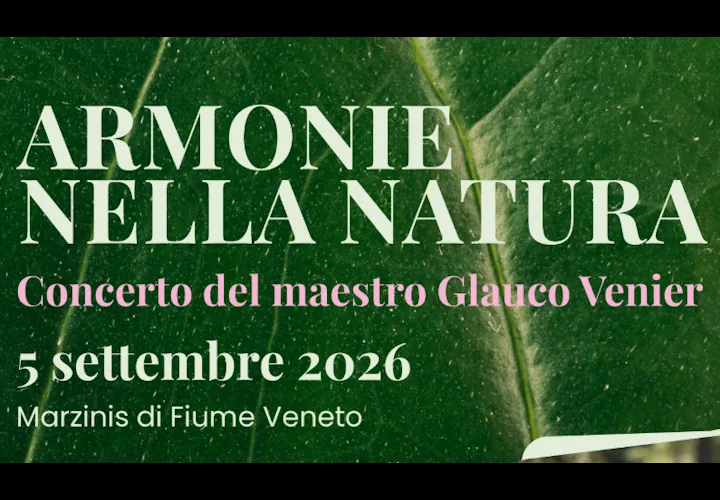

Friuli
sab 5 set · dalle 07:00
Armonie nella Natura con Glauco Venier
Concerto nel bosco, passeggiata facoltativa, colazione e visite guidate al territorio.
 Indicazioni
Indicazioni
- Costi e prenotazioni
- Partecipazione gratuita · Prenotazione obbligatoria
- Programma
- Programma confermato · piano pioggia. In caso di maltempo il solo concerto si sposta al Teatro Parrocchiale di Pescincanna, massimo 120 posti.
- In caso di maltempo
- In caso di pioggia l’evento si sposta nella sala consiliare indicata dal programma.
- Note
- In caso di maltempo, concerto al Teatro Parrocchiale di Pescincanna.
L’EVENTO
Descrizione completa
Un concerto all’alba nel Bosco di Marzinis preceduto da una breve passeggiata facoltativa. Dopo l’esibizione sono previste una colazione e visite guidate alle risorgive, al bosco e alla chiesetta di San Girolamo.
La passeggiata è facoltativa e si svolge sotto la responsabilità dei partecipanti.
IL PROGRAMMA
Programma e orari
Appuntamenti raccolti dalle fonti elencate. Dove manca un orario, non è ancora disponibile in questa scheda.
Sabato 5 settembre
- 07:00 · Ritrovo e parcheggio presso Fantin Srl
- 07:15 · Passeggiata facoltativa verso il bosco
- 08:00 · Concerto di Glauco Venier
- 09:30 · Colazione
- 10:30 · Visite guidate
- 13:00 · Chiusura delle attività
- 18:00 · Santa Messa di San Girolamo
INFORMAZIONI UTILI
Prima di partire
- La passeggiata è facoltativa e si svolge sotto la responsabilità dei partecipanti.
- Contatti: cantierelettura1999@gmail.com
ORGANIZZAZIONE